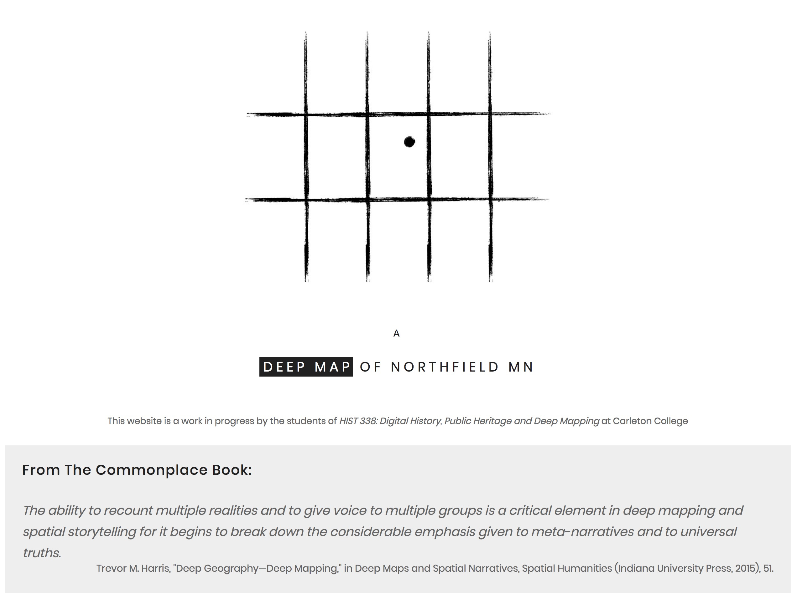
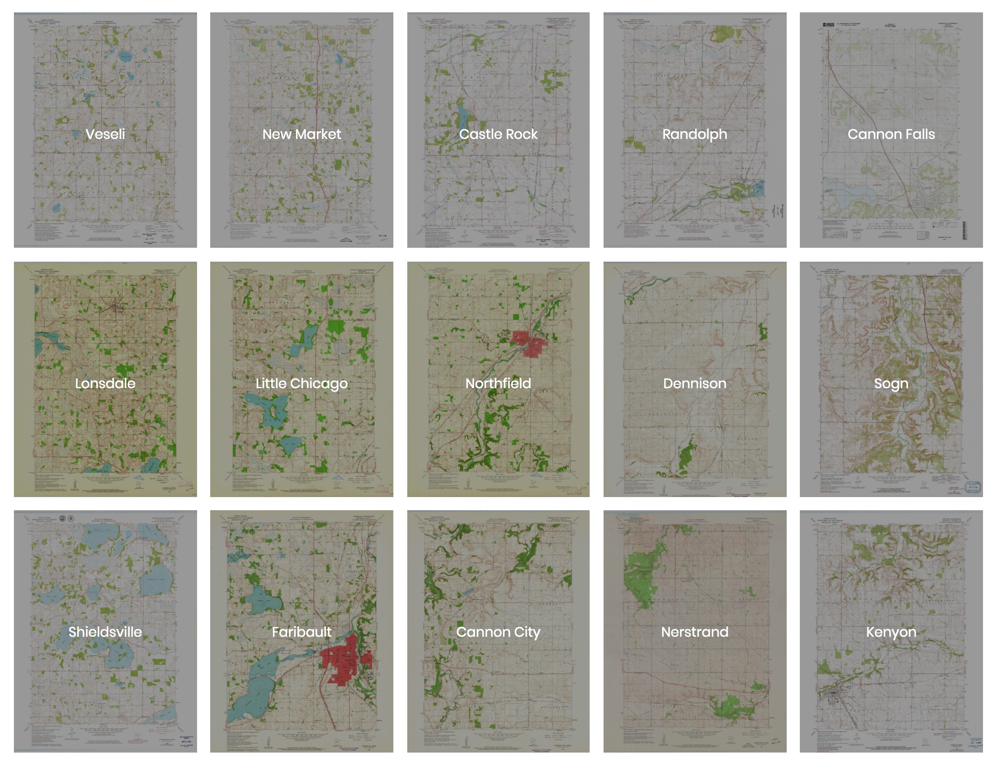
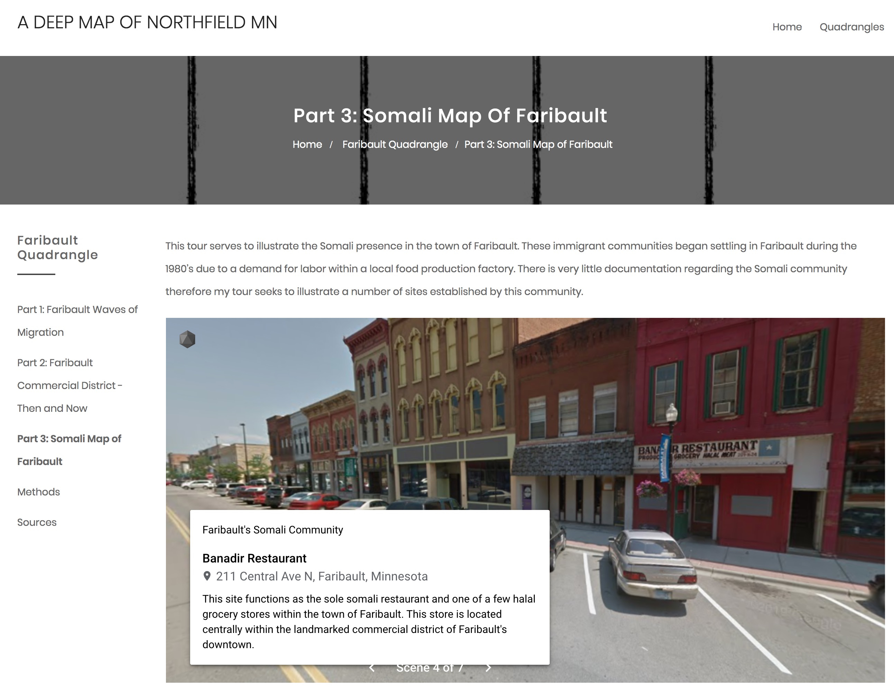

Can new methods of digital humanities and collaborative public history foster an appreciation of the diversity of experiences of space and place through time and across cultures? This paper presents a case study of a recent undergraduate seminar that sought answers to this question through a deep mapping of the long history of Northfield, MN, before and after its most well-known era of late nineteenth-century European settlement. Students were introduced to digital mapping technologies including Geographic Information Systems (GIS), web mapping frameworks, 3D modeling, and video game engines, which they used to map the long history of the region from geological time through its historical origins as part of the Dakota homelands, to its recent past and present as a region of increasingly diverse immigrants. The results (while still a work in progress) prove that digital deep mapping methods are particularly well suited for sharing human-centered stories grounded in land, region and community.
Deep mapping is as much archaeology as it is cartography, plumbing the depths of a particular place to explore its diversity through time.[1] The term was coined by William Least Heat-Moon, whose book PrairyErth set the standard as a richly layered, historical and literary study of the land and peoples of Chase County, Kansas.[2] “Deep mapping” has since been taken up by the digital and spatial humanities communities to explore how issues like time depth, multivocality, and uncertainty — notoriously hard to represent in traditional printed maps — can be visualized using today’s digital mapping and interactive programming techniques.[3]
Figure 1: “A Deep Map of Northfield MN,” a digital remix of PrairyErth’s main elements
Over the course of 10 weeks, the students and I collaboratively built a “deep map” website that tells a series of spatial stories, built in numerous platforms and organized geographically, but linked together through modern web development tools.[4] Inspired by PrairyErth, our goal was to construct a deep map that "encompasses a range of approaches—cartographic, geographical, historical, literary, philosophical, scientific, anthropological, sociological and theological—to weave multiple strands of evidence, observation, impression and memory into a distillation of place."[5] Least Heat-Moon organized his book (somewhat arbitrarily) by US Geological Survey quadrangles, further dividing those sections into chapters that focus on one physical or thematic aspect of the territory. Our website would do the same, with sections devoted to each quadrangle surrounding Northfield MN and 3-5 sub-pages narrating and illustrating distinct aspects of that quadrangle's spatial history.
Figure 2: Primary navigation of the website is via USGS Quadrangle maps
The key innovations of our remix of PrairyErth’s main elements were: 1) multivocality, allowing numerous authors to deepen each other’s insights, and 2) leveraging digital mapping technologies to make these "chapters" interactive and publicly accessible through the internet. ESRI StoryMaps narrate the fraught migrations in the region, from ancestral Dakota peoples, to Czech and Norwegian immigrants, to the current increase in Somali and other West African populations. 3D GIS scenes and embedded Unity games allow surrogate experiences of movement through the landscape, while custom scripts juxtapose individual maps with quotations from our collective Common Place Book (a concept again borrowed and digitally updated from Least Heat-Moon).
Figure 3: “Somali Map of Faribault,” by Zoe Denckla ’20 using Google Tour Creator
The aim of this paper is to share our experiences and open a dialogue about deep mapping as a method for collaborative public scholarship that can connect engaged undergraduate learning with the needs of community partners while staying firmly grounded in place.[6]
[1] Les Roberts, “Deep Mapping and Spatial Anthropology,” Humanities 5, no. 1 (January 14, 2016): 5, https://doi.org/10.3390/h5010005.
[2] William Least Heat-Moon, PrairyErth: A Deep Map, Reissue edition (Boston: Mariner Books, 1999).
[3] David Bodenhamer, John Corrigan, and Trevor Harris, eds., Deep Maps and Spatial Narratives, Spatial Humanities (Bloomington: Indiana University Press, 2015).
[4] “A Deep Map of Northfield MN,” Austin Mason et al. 2019, https://medhieval.com/classes/deepmapping/
[5] Carenza Lewis, “Archaeological Excavation and Deep Mapping in Historic Rural Communities,” Humanities 4, no. 3 (September 10, 2015): 393–417, https://doi.org/10.3390/h4030393.
[6] Denis Wood, “Mapping Deeply,” Humanities 4, no. 3 (August 6, 2015): 304–18, https://doi.org/10.3390/h4030304.